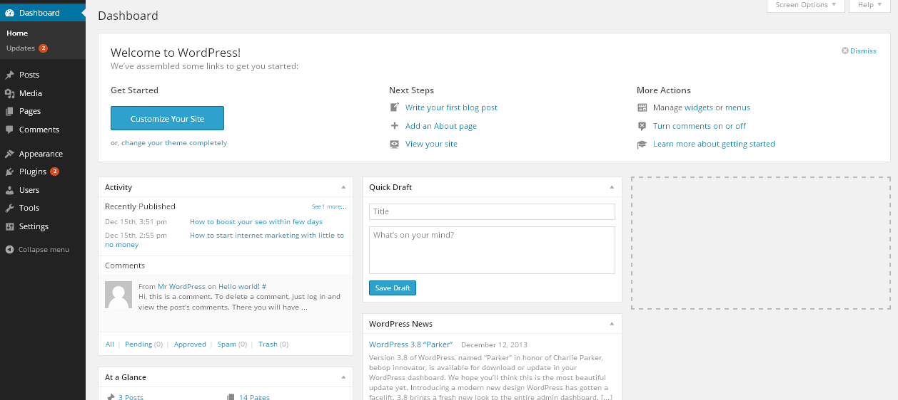

1-Getting Started
1.1-How to Install
FIrst unzip the file you downloaded from codecanyon. You will see three folders documentation,Licensing and Plugin . Plugin folder contains zipped file of plugin . Move that file to your desired location and remember that location.
Step 1: Go to your wordpress admin dashboard.
Step 2: Click on add new under plugin menu
Step 3: Click on “Upload” as shown in image
Step 4: Click On choose file and choose your plugins zip file from the location where you saved and click on install now.
Step 5: Click on Activate as shown in the image.
Step 6: Now plugin is ready to use.Now visit Checkout Fields tab under woocommerce menu.
1.2-How to use it
Drag and Drop field rows to reorder billing and shipping checkout fields
To Edit Existing Checkout fields click on field title.
To remove checkout fields simply click on delete icon on right side of row

To add new billing field click on add billing field/ add shipping field button and then click on field title and configure field options such as field type , label , placeholder , options , class etc.
To undo all the changes and to get back default woocommerce checkout fields click on restore default fields button.
you can also use variable inside notice text.
2-How to
3.1- Disable ship to different address
To disable ship to different address checkbox and shipping fields by default visit shippings tab under woocommerce->settings and select "Only ship to the users billing address" for shipping destination. check attached image.
3-Troubleshoot
3.1-Unable to delete fields
This is result of jquery conflict with any third party plugin. to figure that out , deactivate all other plugins except this and woocommerce and activate each one by one and test. once you find the conflicting plugin, you can deactivate that plugin for some time whenever you want to make changes related to checkout fields. once changes are done , you can reactivate that plugin. it won’t affect the frontend functionality.
this usually happens when some third party plugin loads their js file on all admin pages which is wrong in their part. they should only load their js file on their pages or on pages where it is required.
3.2-fields drag/drop not working
This is result of jquery conflict with any third party plugin. to figure that out , deactivate all other plugins except this and woocommerce and activate each one by one and test. once you find the conflicting plugin, you can deactivate that plugin for some time whenever you want to make changes related to checkout fields. once changes are done , you can reactivate that plugin. it won’t affect the frontend functionality.
this usually happens when some third party plugin loads their js file on all admin pages which is wrong in their part. they should only load their js file on their pages or on pages where it is required.
4-Version Compatibility
This plugin requires woocommerce version 1.6 or higher version.
5-Support
To get support please contact us here.
6-Get Updates
Step 1:- To activate update within wp-admin dashboard visit Settings tab under wooocmmerce/checkout fields menu and enter your valid envato item purchase code.
Step 2:- Now visit all plugins page and click on the check for updates link below this plugin.
if update will be available you will get update information below this plugin. click on update now link to update the plugin.